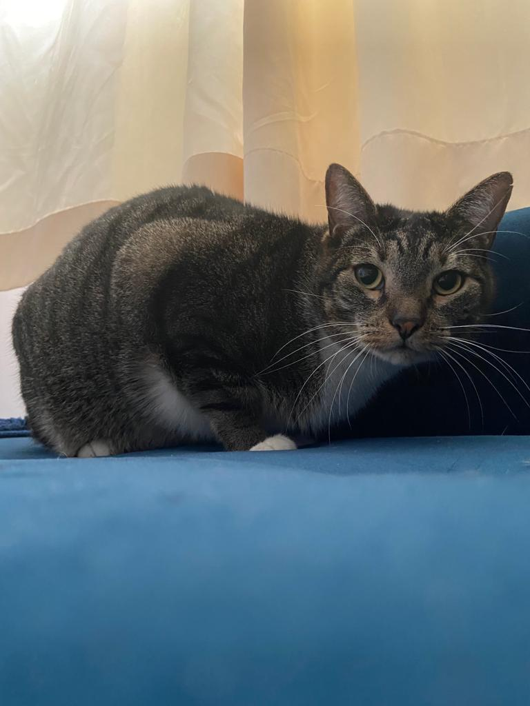
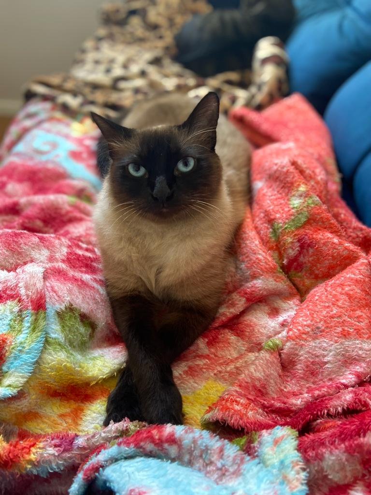
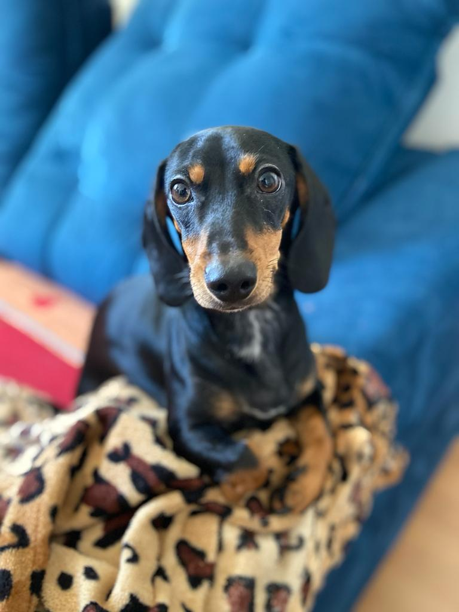
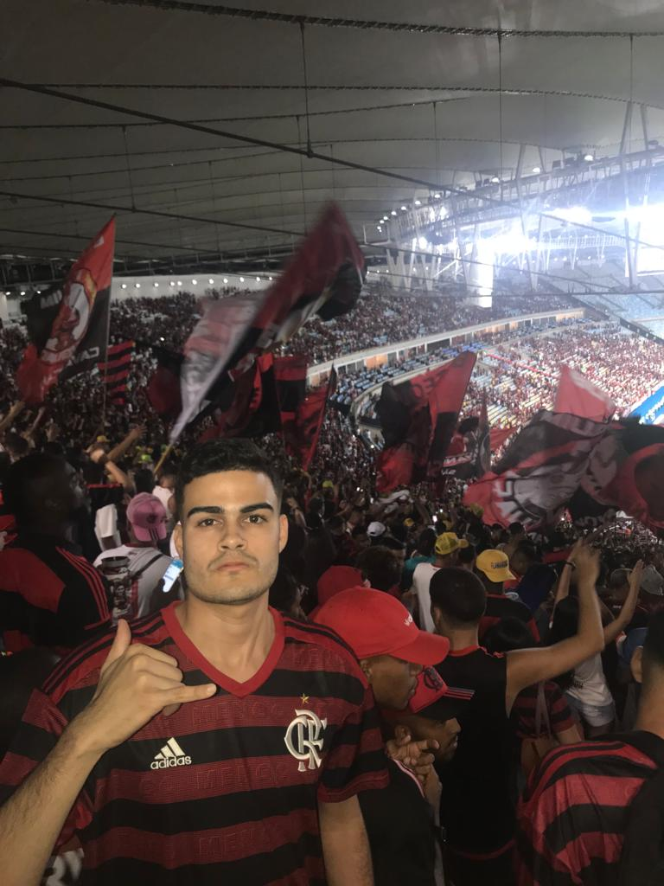

Languages and Tools
Social Network
Portifolio
Personal Skills
Sumary
I am from Rio de Janeiro, I am 24 years old, I worked for 5 years in the Brazilian Navy. Today I live in São Paulo, Capital Attending 3rd Semester of IT - Systems Development Analysis I'm good at languages. With English I am self-taught, I learn with series, movies, music, applications and etc, I organize myself to learn new words every day. I am currently a Software Engineer Intern at Cognizant/Ford Motor Company.
Academic Education
Systems Analysis and Developmen - Descomplica Faculdade digital
Out 2021 - Feb 2024
Nutrition - Estácio
Aug 2018 - Jun 2019
Note: Descontinued
Bahia State School
Feb 2015 - Nov 2017
High School Diploma - Complete high School
Experience
Software Engineer Intership - Cognizant - Ford Motor Company
Since: Mar 2022
Working with:
Kitchen helper - Nipo Brasileiro Hospital
Oct 2021 - Mar 2022
Working with:
Military
Brasilian Navy - Full time
Aug 2016 - Jul 2021
I was enrolled in the Naval Reservists Training Course (CFRN) located on the island of Marambaia, RJ. After graduating, I was able to serve the country, being assigned to serve in the Naval Battalion, Ilha das cobras, RJ, a military organization in which I spent all my 4 years and 9 months. There I worked in the service area in the officers' mess, I dealt with the high echelon of the armed forces from mid-2016 to 2018. In 2018 I completed the adaptation to cook, then becoming a military cook, a role I held until July 2021.
More about me
I'm married since Mar 2022

This is my wife, Beatriz and me
I have 3 pets/children
Chico (standard cat), Nenem (siamese cat) and Maggie (Dachshund dog)
  Once Flamengo, Always Flamengo
My passion for futebol, especially Flamengo is my favorite weekend hobby. This love that I'll take for life
